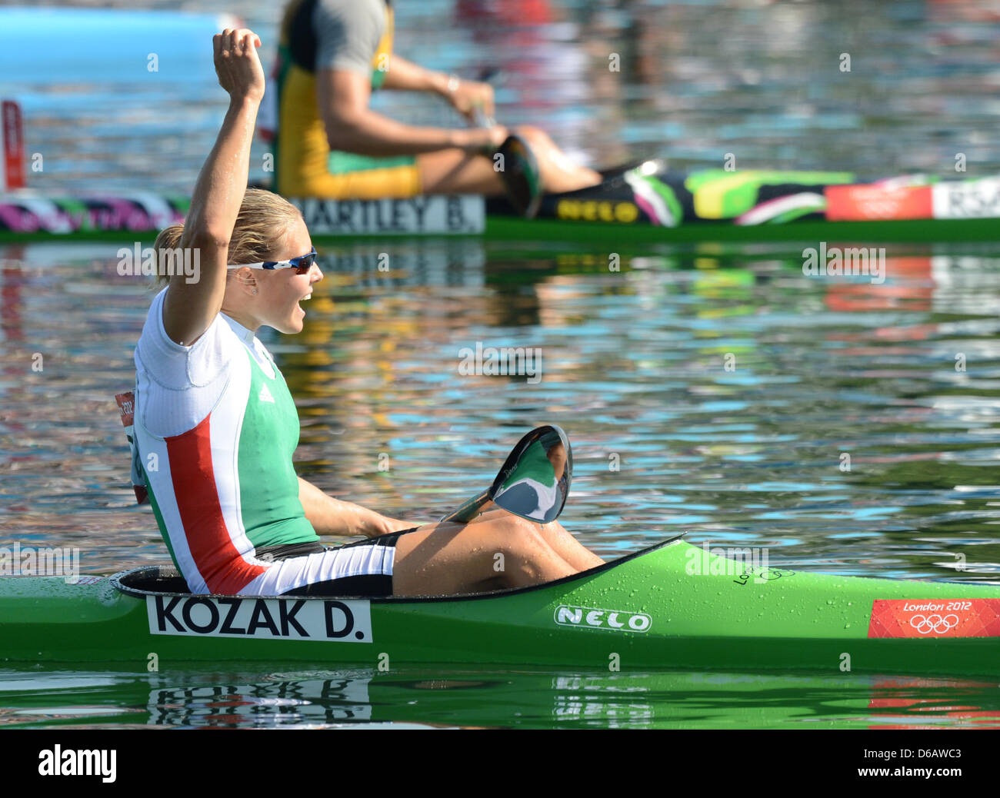

| Muškarci | ||
| K-1 | K-2 | K-4 |
| 1000m | 500m | 500m |
| Žene | ||
| K-1 | K-2 | K-4 |
| 500m | 500m | 500m |
Od Tokija 2020. ukinute su 3 muške discipline i jedna ženska disciplina. Ovo je uznemirilo mnoge, jer to dovodi do celokupne promene plana treninga i prelaska na drugu disciplninu.
Pravi primer za to su sprinterske discipline na 200m za muškarce. Treninzi za 200m i 1000m se dosta razlikuju. U sprintu je najbitnije pokretanje čamca i dostizanje maksimalne brzine.Treninzi obično traju do sat vremena i rade se kraći intervali sa dugačkom pauzom. Treninzi za 1000m su dosta zahtevniji i duži. Radi se na kilometraži i kondiciji. Zbog ove situacije, dosta sprintera gubi jednosed na olimpijadi, jer je jako teško da se promeni dugogodišnji način treniranja.

Kod žena je ukinut samo sprint na 200m. To i nije neki problem jer se treninzi za 500m i 200m ne razlikuju puno. Glavna disciplina za žene je 500m i nju obično svi spremaju. Svi treninzi su bazirani za 500m, a kome ide dobro 500m ide mu i 200m.
Kod nas u zemlji su popularnije olimpijske discipline, jer medalja ostvaruje sportsku penziju.
nazad na vrh